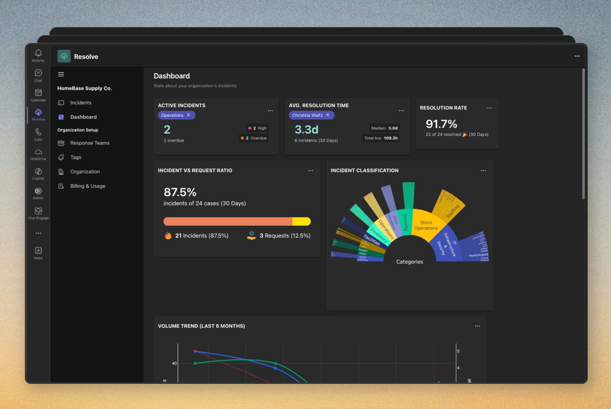

Microsoft Teams has become one of the most popular
collaboration platforms in the world. Organizations rely on it daily for chats,
group conversations, meetings, file sharing, and much more. When something goes
wrong—whether it’s an IT issue, a facilities request, or an HR concern—employees
often turn to Teams first.
It’s common for them to send a direct message to the IT team, post in a support
channel, or even start a group chat to involve more people. In many ways, Teams
is already where incidents get reported and discussed in the day-to-day
operations of modern enterprises.
The strengths of Teams for incident management
Teams presents several natural advantages that make it a
conducive environment for handling problems and incidents. Universal adoption is
perhaps its greatest asset: virtually all employees are familiar with the
platform and use it as part of their daily work routine. This familiarity
eliminates the barrier to entry that other specialized tools present, which
often require additional training. Additionally, Teams offers multiple
communication modes that
adapt to different situations. Incidents can be reported through one-on-one
conversations, group chats, team channels, or even during meetings. This
flexibility allows users to choose the most appropriate channel based on the
urgency and nature of the problem.
Response speed is another significant strength. Thanks to
real-time notifications and presence indicators, issues can receive immediate
attention. Employees can see who’s available and contact the right person
directly without unnecessary delays. Finally, collaboration is built into the
platform’s DNA. When a
complex incident arises, multiple people can easily join the conversation, share
relevant files, screens, or documentation, and coordinate together to find a
solution. This collaborative capability significantly reduces resolution time in
many cases.
Where Teams falls short
Despite these undeniable strengths, Teams was not designed as a
ticket management system, and this limitation becomes evident when organizations
attempt to use it for that purpose. The shortcomings are numerous and can
generate serious operational problems as incident volume grows.
The first challenge is the lack of quick, structured reporting.
Chats in Teams are inherently informal: there’s no consistent way to capture all
the necessary details of an incident or categorize it appropriately. This means
that critical information such as priority level, problem type, or business
impact is often lost or buried in long, disorganized conversations.
Assignment and automatic routing simply don’t exist in Teams.
There are no built-in mechanisms to automatically direct incidents to the right
person or group based on the nature of the problem, technician availability, or
escalation rules established by the organization. Everything depends on someone
manually mentioning the right person or on the affected employee knowing exactly
whom to contact.
Incident history is practically nonexistent in a pure chat
environment. Once a conversation scrolls up with new messages, it becomes
extremely difficult to track or audit what happened. When was the problem
originally reported? Who intervened? What solutions were attempted? This
critical information becomes virtually unrecoverable without investing
considerable time searching through hundreds of messages.
Incident reassignment and escalation also lack native support.
There’s no structured workflow to transfer a ticket from one responder to
another when the problem requires different expertise or a higher level of
authority. This lack of structure can result in issues that remain unresolved or
get completely lost in the transition between teams.
Analytics and reporting are another area where Teams shows its
limitations. The platform doesn’t provide statistics on response times, incident
volumes, SLA compliance, or trends over time. Without this data, managers
operate blindly, unable to identify bottlenecks, allocate resources efficiently,
or demonstrate the value of their support teams.
Finally, the absence of a centralized dashboard means managers
can’t get a clear view of all open incidents, their current status, or their
distribution among team members. This lack of visibility makes it practically
impossible to proactively manage workload or effectively prioritize when
multiple problems compete for simultaneous attention.
In short, while Teams is excellent for communication, it’s
limited for structured incident management when traceability, accountability,
and defined processes are needed.
Extending Teams with a ticket management solution
This is where solutions like Resolve come in. These tools are
built directly on top of Teams infrastructure to provide the missing
capabilities of a professional ticket system while maintaining the familiar
experience that users already know and appreciate. With a solution like Resolve
integrated into Teams,
organizations can report
incidents in a structured way without leaving the Teams environment. Guided
forms ensure that all necessary information is captured from the very beginning:
problem description, category or relevant attachments.
Automatic routing becomes a reality. Incidents are
intelligently directed to the
right responder/team based on predefined team roles, considering also workloads
and staff availability. This
eliminates the friction of manually searching for the right person and
significantly accelerates first response times.
Collaboration is maintained, but now in a structured manner.
The system can
automatically create dedicated group chats for each incident, inviting all
relevant parties. These temporary workspaces keep all related communication
organized and easily retrievable, without mixing it with unrelated
conversations.
The complete incident history is recorded from initial report
to final
resolution. Every update, every status change, every person who intervened,
every file shared—everything is documented in a clear, auditable timeline. This
not only facilitates tracking but also provides valuable information for
resolving similar problems in the future.
Reassignment and escalation become smooth, trackable processes.
When a ticket
needs to be transferred to another specialist or escalated to a higher level of
support, this is done through defined workflows that maintain continuity and
appropriately notify all involved parties.
Real-time dashboards and performance statistics are finally
available. Managers
can see at a glance how many incidents are open, which are at risk of missing
SLAs, how workload is distributed across the team, and what trends are emerging
over time. This visibility enables proactive, data-driven management.
The result is a scenario where Teams remains the hub where everyone works, but
now with the structure and intelligence of a modern ticketing system operating
seamlessly behind the scenes.

Final thoughts
Microsoft Teams is already where most employees turn when
something goes wrong. It’s the tool they have open all day, the one they know
well, and the one they trust for communication. However, without proper
structure, incident management in Teams can quickly become chaotic and extremely
difficult to manage at scale.
By extending Teams with a purpose-built ticket management
solution like Resolve,
organizations can truly combine the best of both worlds. On one hand, they
maintain the familiarity and collaborative power of Teams that employees value
and use efficiently. On the other hand, they gain the structured workflows,
comprehensive tracking, and robust analytics that characterize a professional
ticketing system.
This way, Teams genuinely transforms into the single place
where incidents are
reported, actively managed, and effectively resolved—without forcing users to
switch between multiple applications or learn completely new systems. Incident
management becomes more efficient without sacrificing user experience, a balance
that benefits both those who report problems and those who work to resolve them.